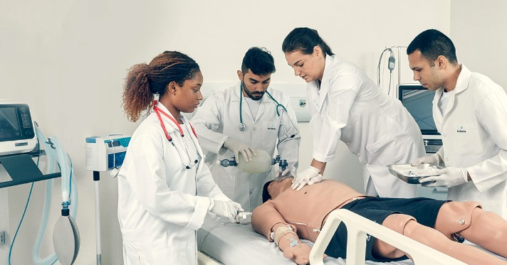

Serviços de saúde básica disponibilizados para todos os habitantes, sem necessidade de pagar diretamente por eles, com o avanço no plano de preparação profissional e um grande investimento no setor poderemos dispor de
profissionais especializados em cada área.
Além disso, teremos um trabalho de campo que mapeará os problemas de cada região, dentro de cada estado, para sumarizar a necessidade de cada parte do país, evitar problemas epidemiológicos e garantir a
fiscalização na aplicação correta dos recursos públicos destinados à saúde.